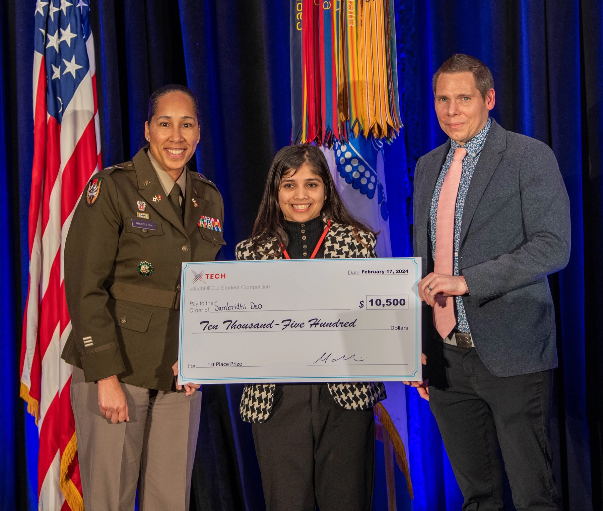
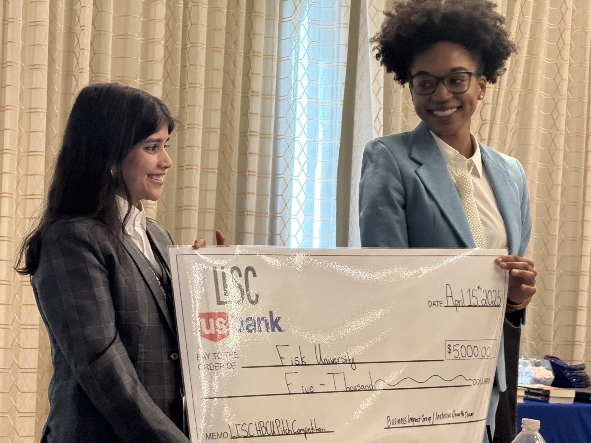

Initiatives for Girls in Physics and Tech
Founded IGPTech to help girls explore physics and technology.
HACKATHONS · RESEARCH · COMMUNITY
I love speaking for the cause, for the innovation, and building things. Here are the moments, coverage, and talks behind the work.
Founded IGPTech to help girls explore physics and technology.
Contributed as a data-team volunteer to a platform connecting COVID-19 assistance providers and people seeking help.
Completed an AI internship from December 2021 to March 2022, received a scholarship certificate, and completed the Digital Marketing Expert Program.
Published my first book of stories and drawings.
Completed the summer program and built an interactive game.
Selected from 648 applicants for community impact through IGPTech and Sketching Smile.
Glocal profile ↗Joined TKS through its Innovate program and received an NN founders full-ride scholarship.
Recognized for participation and efforts to solve challenges on Earth and in space.
Selected from 500+ applicants to learn, build, and deploy machine learning models.
The community reached more than 5,000 girls interested in physics and technology.
Recognized for creating and deploying forecasting models using the Abacus.AI platform.
Women in Tech Global Awards nominated the organization for its community initiative.
Took a Greyhound bus from New Jersey to Boston to represent Nepal at Harvard, stayed at MIT, and met amazing people.
Received a full scholarship to conduct mentored machine-learning research.
Profile and updates ↗Advanced as a semi-finalist in the Flux Capacitor program supporting deep-tech researchers.
Presented “REANA: A workflow for Dark Matter searches.” Built reproducible scientific workflows. IRIS-HEP fellow profile ↗
During the Hack the Planet scholarship, I built Heal-Di, a health-tech platform for more accessible medical data using distributed systems, with Redpanda mentorship. Redpanda’s announcement ↗
Placed first runner-up in the EasyA x VeChain Harvard hackathon.
Presented “REANA workflow for Dark Matter Searches.” Talk details and recording ↗
Won with IntelliDefend AI at the BEYA STEM Conference. U.S. Army coverage ↗ · My event post ↗ · Watch my presentation ↗

Cloud and backend development on the NSF-funded CollabNext team.
Our team won for a project helping Ordinarie Heroes choose a neighborhood for expansion. Sam’s LinkedIn coverage ↗
Researched federated deep learning for false data injection attack detection in cyber-physical power systems. Related paper ↗
Won with Team Equidata Innovators from Fisk University. Sam’s LinkedIn post ↗
Co-authored Federated Deep Learning Model for False Data Injection Attack Detection in Cyber Physical Power Systems, published in Energies. The study explores privacy-preserving detection of false data injection attacks in cyber-physical power systems. Read the paper ↗
Won an event exploring ethical applications of generative AI, with a project to identify evolving drug slang and support public-health stakeholders. Sam’s write-up ↗
Joined the HBCU Talent Development cohort as a Project Manager and Data Analyst. LinkedIn announcement ↗
A Socratic RAG Approach to Connect Natural Language Queries on Research Topics with Knowledge Organization Systems describes CollabNext, a person-centered knowledge graph connecting people, organizations, and research topics, with a focus on HBCUs and emerging researchers. Read the paper on arXiv ↗
Presented our work at the showcase and received a $5,000 program award to support the venture.
Sam’s event post ↗ · Rural LISC cohort coverage ↗

Worked across cloud ecosystem and security. Sam’s internship post ↗
Returned to win first place with IntelliDefend AI. Prize and program details are in the 2025 competition rules ↗.
Team I4, with Kanchan Thapa, earned second place for Fisk University. Official winners and recap ↗
Placed among the top four of 50+ teams in the Disney on the Yard Innovation Challenge. Disney challenge overview ↗
Led a Fisk University team to a top-five finish among 80+ teams. Black Enterprise coverage ↗
On Microsoft Security’s Data Governance team, working across data protection and loss prevention.
Served on the judging panel for the 2026 hackathon.
AUC Data Science Initiative ↗Where a day is not documented here, I use the month or year available in the records. Coverage links open the original posts and event pages.